from sklearn.datasets import load_iris
iris = load_iris()
X = iris.data[:, 2:] # petal length and width
y = iris.targetLab 11 · Decision Trees, Random Forests, Boosting & SVM
Classical machine learning with scikit-learn and XGBoost, plus a linear SVM trained by hand
Decision trees, ensembles (random forest, AdaBoost, gradient boosting, XGBoost) and support vector machines.
NoteAbout this edition
English text and comments were edited for publication. Outputs are archived notebook results, not newly executed results. Lab scaffolds and reference illustrations were supplied by the course. Source and reproducibility notes.
TipSummary
This lab covers the classical machine-learning models of the course with scikit-learn, following Hands-On Machine Learning (Géron). Decision trees: entropy vs. Gini criteria, depth limits, class probability estimates, regularization with min_samples_leaf, regression trees, and the instability of trees. Ensembles: voting, bagging/pasting, random forests, AdaBoost, gradient boosting built step by step from residuals, and XGBoost. Support vector machines: hard vs. soft margin, the effect of \(C\), polynomial features and the kernel trick, and finally a small linear SVM classifier trained with (sub)gradient descent and compared with SVC.
1. Decision Trees
1.1 Entropy, Gini and Information Gain
- Both impurity metrics are 1 when the class distribution is most complex (uniform) and 0 when it is deterministic.
1.2 Training a Decision Tree with scikit-learn
- Hands-On Machine Learning, p. 229 ff.
- Reference notebook
iris.feature_names[2:] # petal length and width['petal length (cm)', 'petal width (cm)']print("[length, width] , class")
print(X[0], y[0])
print(X[50], y[50])
print(X[100], y[100])[length, width] , class
[1.4 0.2] 0
[4.7 1.4] 1
[6. 2.5] 2iris.target_namesarray(['setosa', 'versicolor', 'virginica'], dtype='<U10')from sklearn.tree import DecisionTreeClassifierAppendix 1 slides (decision trees), p. 12 - Entropy criterion
################## Fill Your Code! ##################
# https://scikit-learn.org/stable/modules/generated/sklearn.tree.DecisionTreeClassifier.html
tree_clf_entropy = DecisionTreeClassifier(criterion='entropy', max_depth=2)
tree_clf_entropy.fit(X, y)
#####################################################DecisionTreeClassifier(criterion='entropy', max_depth=2)Appendix 1 slides, p. 14 - Gini criterion
################## Fill Your Code! ##################
# https://scikit-learn.org/stable/modules/generated/sklearn.tree.DecisionTreeClassifier.html
tree_clf_gini = DecisionTreeClassifier(criterion='gini', max_depth=2)
tree_clf_gini.fit(X, y)
#####################################################DecisionTreeClassifier(max_depth=2)Decision trees are visualized with export_graphviz.
from sklearn.tree import export_graphviz
export_graphviz(
tree_clf_entropy,
out_file='iris_tree_entropy.dot',
feature_names=iris.feature_names[2:],
class_names=iris.target_names,
rounded=True,
filled=True
)
export_graphviz(
tree_clf_gini,
out_file='iris_tree_gini.dot',
feature_names=iris.feature_names[2:],
class_names=iris.target_names,
rounded=True,
filled=True
)!dot -Tpng iris_tree_entropy.dot -o iris_tree_entropy.png
!dot -Tpng iris_tree_gini.dot -o iris_tree_gini.png# https://stackoverflow.com/questions/49478791/how-can-i-open-images-in-a-google-colaboratory-notebook-cell-from-uploaded-png-f
from IPython.display import Image
Image('iris_tree_entropy.png')Image('iris_tree_gini.png')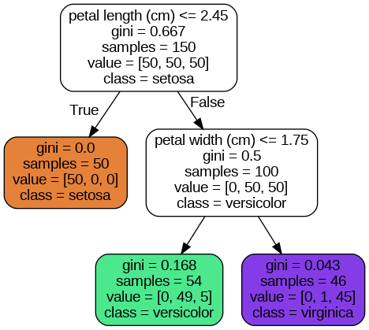
- Now change the maximum depth of the tree.
################## Fill Your Code! ##################
tree_clf_md3 = DecisionTreeClassifier(max_depth=3)
tree_clf_md3.fit(X, y)
#####################################################
dot_data = export_graphviz(
tree_clf_md3,
feature_names=iris.feature_names[2:],
class_names=iris.target_names,
out_file='iris_tree_md3.dot',
rounded=True,
filled=True
)
!dot -Tpng iris_tree_md3.dot -o iris_tree_md3.png
Image('iris_tree_md3.png')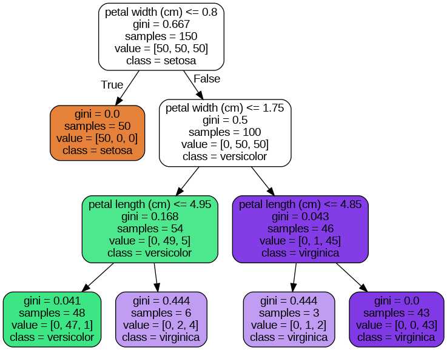
- Next, build a decision tree without any depth limit.
################## Fill Your Code! ##################
tree_clf_free = DecisionTreeClassifier()
tree_clf_free.fit(X, y)
#####################################################
dot_data = export_graphviz(
tree_clf_free,
feature_names=iris.feature_names[2:],
class_names=iris.target_names,
out_file='iris_tree_free.dot',
rounded=True,
filled=True
)
!dot -Tpng iris_tree_free.dot -o iris_tree_free.png
Image('iris_tree_free.png')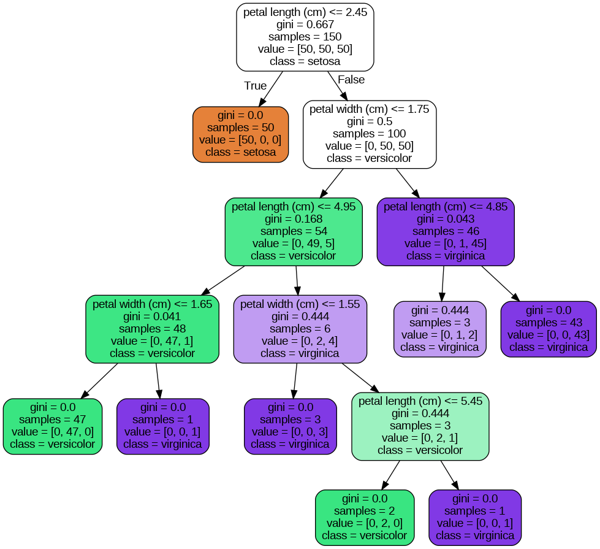
Making predictions
Hands-On Machine Learning, p. 231 ff.
import matplotlib.pyplot as plt
import numpy as np
from matplotlib.colors import ListedColormap
def plot_decision_boundary(clf, X, y, axes=[0, 7.5, 0, 3], iris=True, legend=False, plot_training=True):
x1s = np.linspace(axes[0], axes[1], 100)
x2s = np.linspace(axes[2], axes[3], 100)
x1, x2 = np.meshgrid(x1s, x2s)
X_new = np.c_[x1.ravel(), x2.ravel()]
################## Fill Your Code! ##################
## prediction
y_pred = clf.predict(X_new).reshape(x1.shape)
#####################################################
custom_cmap = ListedColormap(['#fafab0','#9898ff','#a0faa0'])
plt.contourf(x1, x2, y_pred, alpha=0.3, cmap=custom_cmap)
if not iris:
custom_cmap2 = ListedColormap(['#7d7d58','#4c4c7f','#507d50'])
plt.contour(x1, x2, y_pred, cmap=custom_cmap2, alpha=0.8)
if plot_training:
plt.plot(X[:, 0][y==0], X[:, 1][y==0], "yo", label="Iris setosa")
plt.plot(X[:, 0][y==1], X[:, 1][y==1], "bs", label="Iris versicolor")
plt.plot(X[:, 0][y==2], X[:, 1][y==2], "g^", label="Iris virginica")
plt.axis(axes)
if iris:
plt.xlabel("Petal length", fontsize=14)
plt.ylabel("Petal width", fontsize=14)
else:
plt.xlabel(r"$x_1$", fontsize=18)
plt.ylabel(r"$x_2$", fontsize=18, rotation=0)
if legend:
plt.legend(loc="lower right", fontsize=14)plt.figure(figsize=(8, 4))
plot_decision_boundary(tree_clf_gini, X, y)
plt.plot([2.45, 2.45], [0, 3], "k-", linewidth=2)
plt.plot([2.45, 7.5], [1.75, 1.75], "k--", linewidth=2)
plt.plot([4.95, 4.95], [0, 1.75], "k:", linewidth=2)
plt.plot([4.85, 4.85], [1.75, 3], "k:", linewidth=2)
plt.text(1.25, 1.0, "Depth=0", fontsize=15)
plt.text(3.2, 1.90, "Depth=1", fontsize=13)
plt.text(3.7, 2.5, "(Depth=2)", fontsize=11)
plt.text(3.9, 0.5, "(Depth=2)", fontsize=11)
#save_fig("decision_tree_decision_boundaries_plot")
plt.show()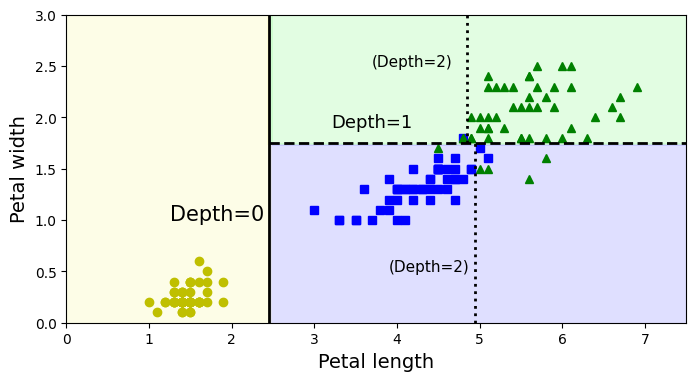
1.5 Estimating Class Probabilities
Hands-On Machine Learning, p. 234 ff.
- Find the leaf node of a sample and return the class proportions of the training samples in that leaf.
Image('iris_tree_gini.png')
# petal length : 5 cm, petal width : 1.5 cm
# [0, 49, 5] -> [0/54, 49/54, 5/54]
tree_clf_gini.predict_proba([[5, 1.5]])array([[0. , 0.90740741, 0.09259259]])tree_clf_gini.predict([[5, 1.5]])array([1])1.6 Regularization Hyperparameters
Hands-On Machine Learning, p. 237 ff.
Decision trees make very few assumptions about the training data.
Trained without constraints they are likely to overfit the data.
To avoid this, the following parameters of the tree are constrained:
maximum depth
minimum number of samples per node
from sklearn.datasets import make_moons
Xm, ym = make_moons(n_samples=100, noise=0.1, random_state=2023)def plot_dataset(X, y, axes):
plt.plot(X[:, 0][y==0], X[:, 1][y==0], "yo")
plt.plot(X[:, 0][y==1], X[:, 1][y==1], "bs")
plt.axis(axes)
plt.grid(True, which='both')
plt.xlabel(r"$x_1$", fontsize=20)
plt.ylabel(r"$x_2$", fontsize=20, rotation=0)
plot_dataset(Xm, ym, [-1.5, 2.5, -1, 1.5])
plt.show()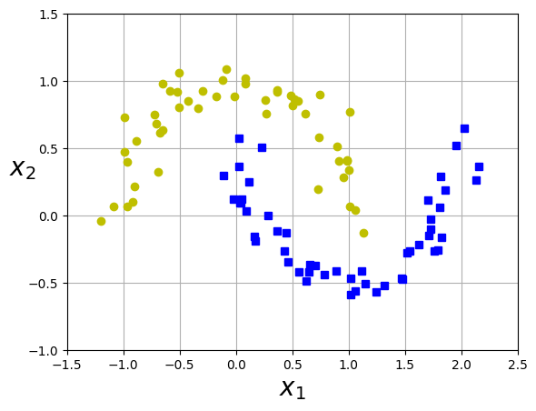
################## Fill Your Code! ##################
deep_tree_clf1 = DecisionTreeClassifier(random_state=2023)
# min_samples_leaf: minimum number of samples a leaf node must have
deep_tree_clf2 = DecisionTreeClassifier(min_samples_leaf=5, random_state=2023)
#####################################################
deep_tree_clf1.fit(Xm, ym)
deep_tree_clf2.fit(Xm, ym)
fig, axes = plt.subplots(ncols=2, figsize=(10, 4), sharey=True)
plt.sca(axes[0])
plot_decision_boundary(deep_tree_clf1, Xm, ym, axes=[-1.5, 2.4, -1, 1.5], iris=False)
plt.title("No restrictions", fontsize=16)
plt.sca(axes[1])
plot_decision_boundary(deep_tree_clf2, Xm, ym, axes=[-1.5, 2.4, -1, 1.5], iris=False)
plt.title("min_samples_leaf = {}".format(deep_tree_clf2.min_samples_leaf), fontsize=14)
plt.ylabel("")
#save_fig("min_samples_leaf_plot")
plt.show()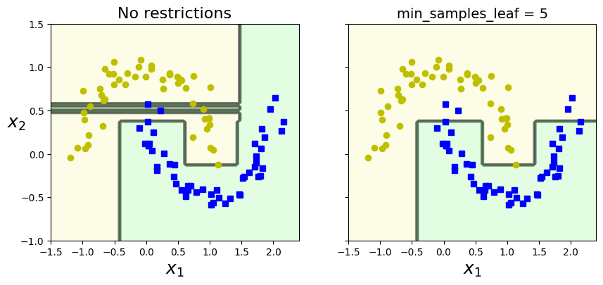
export_graphviz(
deep_tree_clf1,
out_file='deep_tree_clf1.dot',
feature_names=['x1', 'x2'],
class_names=['y', 'b'],
rounded=True,
filled=True
)
!dot -Tpng deep_tree_clf1.dot -o deep_tree_clf1.png
Image('deep_tree_clf1.png')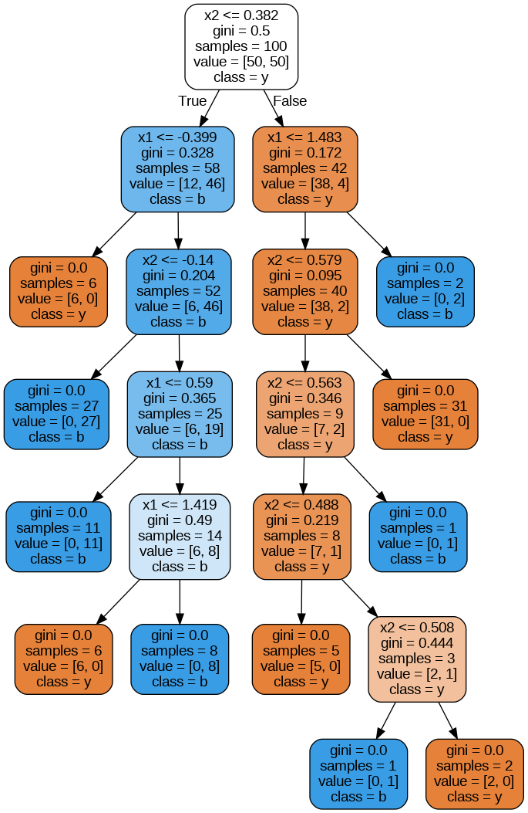
export_graphviz(
deep_tree_clf2,
out_file='deep_tree_clf2.dot',
feature_names=['x1', 'x2'],
class_names=['y', 'b'],
rounded=True,
filled=True
)
!dot -Tpng deep_tree_clf2.dot -o deep_tree_clf2.png
Image('deep_tree_clf2.png')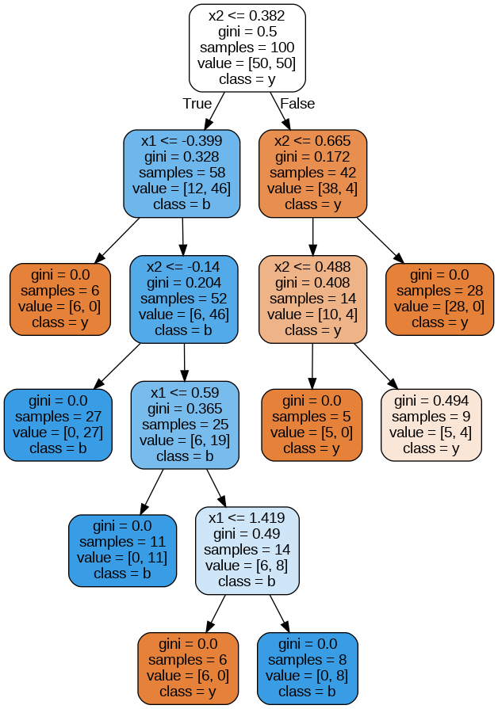
1.7 Regression
Hands-On Machine Learning, p. 239 ff.
# Noisy quadratic dataset
np.random.seed(2023)
m = 200
X = np.random.rand(m, 1)
y = 4 * (X - 0.5) ** 2
y = y + np.random.randn(m, 1) / 10plt.plot(X, y, "bo")
plt.axis([-0.5, 1.5, -1, 2])
plt.show()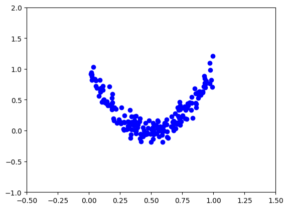
from sklearn.tree import DecisionTreeRegressor
################## Fill Your Code! ##################
tree_reg = DecisionTreeRegressor(max_depth = 2) # 0, 1, 2
tree_reg.fit(X, y)
#####################################################DecisionTreeRegressor(max_depth=2)export_graphviz(
tree_reg,
out_file='regression_tree.dot',
feature_names=["x1"],
rounded=True,
filled=True
)!dot -Tpng regression_tree.dot -o regression_tree.pngImage('regression_tree.png')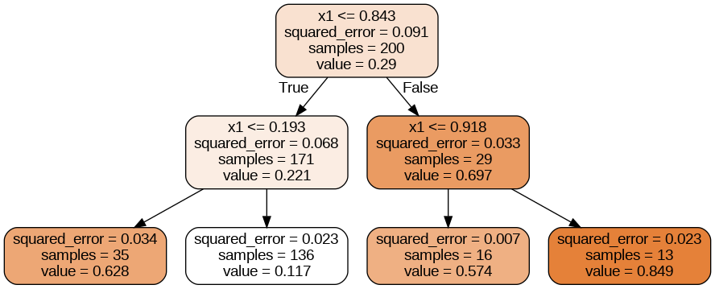
- Each node predicts a value instead of a class.
from sklearn.tree import DecisionTreeRegressor
tree_reg1 = DecisionTreeRegressor(random_state=2023, max_depth=2)
tree_reg2 = DecisionTreeRegressor(random_state=2023, max_depth=3)
tree_reg1.fit(X, y)
tree_reg2.fit(X, y)
def plot_regression_predictions(tree_reg, X, y, axes=[0, 1, -0.2, 1], ylabel="$y$"):
x1 = np.linspace(axes[0], axes[1], 500).reshape(-1, 1)
y_pred = tree_reg.predict(x1)
plt.axis(axes)
plt.xlabel("$x_1$", fontsize=18)
if ylabel:
plt.ylabel(ylabel, fontsize=18, rotation=0)
plt.plot(X, y, "b.")
plt.plot(x1, y_pred, "r.-", linewidth=2, label=r"$\hat{y}$")
fig, axes = plt.subplots(ncols=2, figsize=(10, 4), sharey=True)
plt.sca(axes[0])
plot_regression_predictions(tree_reg1, X, y)
for split, style in ((0.1973, "k-"), (0.0917, "k--"), (0.7718, "k--")):
plt.plot([split, split], [-0.2, 1], style, linewidth=2)
plt.text(0.21, 0.65, "Depth=0", fontsize=15)
plt.text(0.01, 0.2, "Depth=1", fontsize=13)
plt.text(0.65, 0.8, "Depth=1", fontsize=13)
plt.legend(loc="upper center", fontsize=18)
plt.title("max_depth=2", fontsize=14)
plt.sca(axes[1])
plot_regression_predictions(tree_reg2, X, y, ylabel=None)
for split, style in ((0.1973, "k-"), (0.0917, "k--"), (0.7718, "k--")):
plt.plot([split, split], [-0.2, 1], style, linewidth=2)
for split in (0.0458, 0.1298, 0.2873, 0.9040):
plt.plot([split, split], [-0.2, 1], "k:", linewidth=1)
plt.text(0.3, 0.5, "Depth=2", fontsize=13)
plt.title("max_depth=3", fontsize=14)
#save_fig("tree_regression_plot")
plt.show()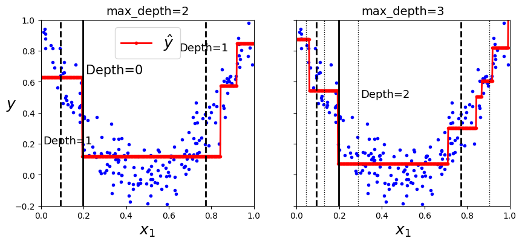
- The predicted value in each region is the mean of the targets in that region.
1.7.1 Regularizing a Regression Tree
################## Fill Your Code! ##################
tree_reg1 = DecisionTreeRegressor(random_state=2023)
tree_reg2 = DecisionTreeRegressor(random_state=2023, min_samples_leaf=10)
#####################################################
tree_reg1.fit(X, y)
tree_reg2.fit(X, y)
x1 = np.linspace(0, 1, 500).reshape(-1, 1)
y_pred1 = tree_reg1.predict(x1)
y_pred2 = tree_reg2.predict(x1)
fig, axes = plt.subplots(ncols=2, figsize=(10, 4), sharey=True)
plt.sca(axes[0])
plt.plot(X, y, "b.")
plt.plot(x1, y_pred1, "r.-", linewidth=2, label=r"$\hat{y}$")
plt.axis([0, 1, -0.2, 1.1])
plt.xlabel("$x_1$", fontsize=18)
plt.ylabel("$y$", fontsize=18, rotation=0)
plt.legend(loc="upper center", fontsize=18)
plt.title("No restrictions", fontsize=14)
plt.sca(axes[1])
plt.plot(X, y, "b.")
plt.plot(x1, y_pred2, "r.-", linewidth=2, label=r"$\hat{y}$")
plt.axis([0, 1, -0.2, 1.1])
plt.xlabel("$x_1$", fontsize=18)
plt.title("min_samples_leaf={}".format(tree_reg2.min_samples_leaf), fontsize=14)
#save_fig("tree_regression_regularization_plot")
plt.show()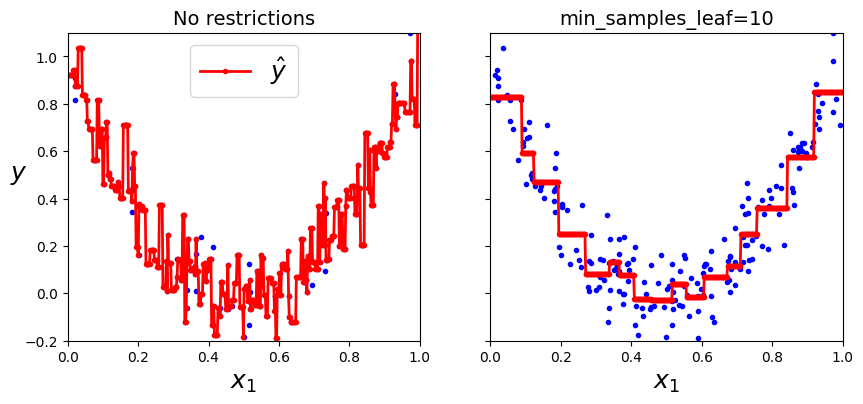
1.8 Instability
Hands-On Machine Learning, p. 241 ff.
- The decision boundary a decision tree produces depends strongly on the data (e.g. a 45° rotation of the same dataset).
- This means that the data matter a great deal when training decision trees.
np.random.seed(2023)
Xs = np.random.rand(100, 2) - 0.5
ys = (Xs[:, 0] > 0).astype(np.float32) * 2
angle = np.pi / 4
rotation_matrix = np.array([[np.cos(angle), -np.sin(angle)], [np.sin(angle), np.cos(angle)]])
Xsr = Xs.dot(rotation_matrix)
tree_clf_s = DecisionTreeClassifier(random_state=42)
tree_clf_s.fit(Xs, ys)
tree_clf_sr = DecisionTreeClassifier(random_state=42)
tree_clf_sr.fit(Xsr, ys)
fig, axes = plt.subplots(ncols=2, figsize=(10, 4), sharey=True)
plt.sca(axes[0])
plot_decision_boundary(tree_clf_s, Xs, ys, axes=[-0.7, 0.7, -0.7, 0.7], iris=False)
plt.sca(axes[1])
plot_decision_boundary(tree_clf_sr, Xsr, ys, axes=[-0.7, 0.7, -0.7, 0.7], iris=False)
plt.ylabel("")
#save_fig("sensitivity_to_rotation_plot")
plt.show()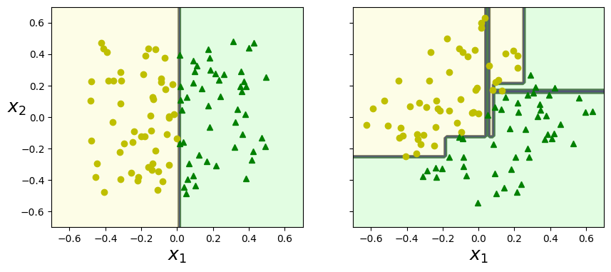
X = iris.data[:, 2:] # petal length and width
y = iris.targettree_clf = DecisionTreeClassifier(max_depth=2)
tree_clf.fit(X, y)
plt.figure(figsize=(8, 4))
plot_decision_boundary(tree_clf, X, y)
plt.plot([2.45, 2.45], [0, 3], "k-", linewidth=2)
plt.plot([2.45, 7.5], [1.75, 1.75], "k--", linewidth=2)
plt.plot([4.95, 4.95], [0, 1.75], "k:", linewidth=2)
plt.plot([4.85, 4.85], [1.75, 3], "k:", linewidth=2)
plt.text(1.40, 1.0, "Depth=0", fontsize=15)
plt.text(3.2, 1.80, "Depth=1", fontsize=13)
plt.text(4.05, 0.5, "(Depth=2)", fontsize=11)
#save_fig("decision_tree_decision_boundaries_plot")
plt.show()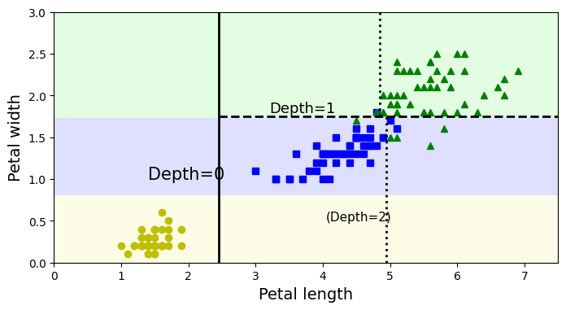
Decision trees are very sensitive to small variations in the training data.
Remove the single widest Iris-versicolor sample from the training set and retrain
(petal length 4.8 cm, petal width 1.8 cm).
X[(X[:, 1]==X[:, 1][y==1].max()) & (y==1)] # widest Iris versicolor flower
not_widest_versicolor = (X[:, 1]!=1.8) | (y==2)
X_tweaked = X[not_widest_versicolor]
y_tweaked = y[not_widest_versicolor]
tree_clf_tweaked = DecisionTreeClassifier(max_depth=2, random_state=40)
tree_clf_tweaked.fit(X_tweaked, y_tweaked)
plt.figure(figsize=(8, 4))
plot_decision_boundary(tree_clf_tweaked, X_tweaked, y_tweaked, legend=False)
plt.plot([0, 7.5], [0.8, 0.8], "k-", linewidth=2)
plt.plot([0, 7.5], [1.75, 1.75], "k--", linewidth=2)
plt.text(1.0, 0.9, "Depth=0", fontsize=15)
plt.text(1.0, 1.80, "Depth=1", fontsize=13)
#save_fig("decision_tree_instability_plot")
plt.show()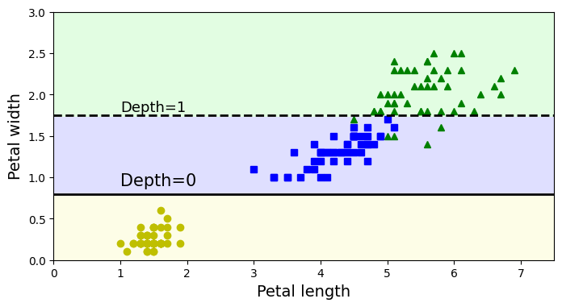
2. Random Forests
2.0 Ensembles
- Train several classifiers on the data.
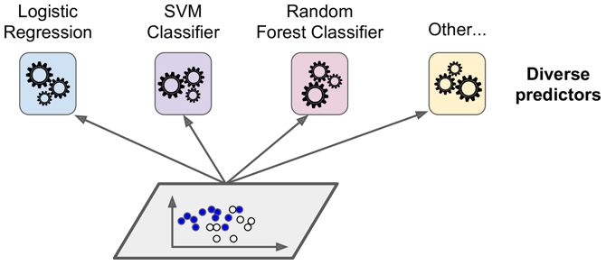
- When the trained classifiers are used together, the class with the most votes becomes the ensemble prediction.
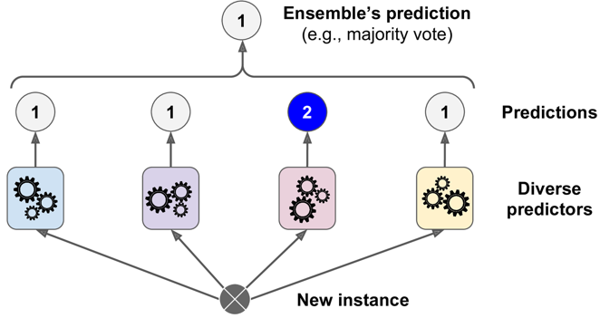
- A predictor built this way (several independent classifiers) is called an ensemble.
2.1 Random Forest
Hands-On Machine Learning, p. 254 ff.
- An ensemble consisting only of decision trees.
- There are two ways to train the ensemble:
- Bagging: sample the training data with replacement
- Pasting: sample the training data without replacement
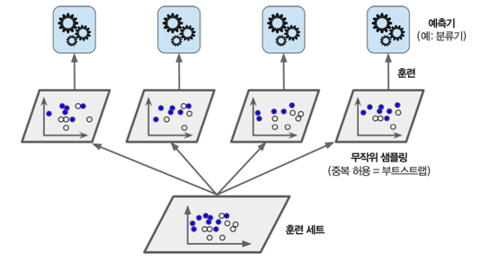
- A random forest is an ensemble of decision trees trained with bagging.
from sklearn.model_selection import train_test_split
from sklearn.datasets import make_moons
X, y = make_moons(n_samples=500, noise=0.30, random_state=2023)
X_train, X_test, y_train, y_test = train_test_split(X, y, random_state=2023)plot_dataset(X, y, [-2, 3, -1.5, 2])
plt.show()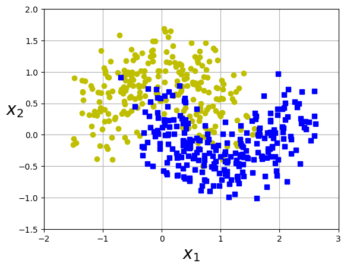
DecisionTreeClassifier
tree_clf = DecisionTreeClassifier(random_state=2023)
tree_clf.fit(X_train, y_train)
y_pred_tree = tree_clf.predict(X_test)from sklearn.metrics import accuracy_score
print(accuracy_score(y_test, y_pred_tree))0.824RandomForestClassifier
n_estimators : number of classifiers (trees)
max_leaf_nodes : maximum number of leaf nodes [regularization]
n_jobs : number of CPU cores to use (-1 = all)
from sklearn.ensemble import RandomForestClassifier
################## Fill Your Code! ##################
rnd_clf = RandomForestClassifier(n_estimators=500, max_leaf_nodes=16, n_jobs=-1)
#####################################################
rnd_clf.fit(X_train, y_train)
y_pred_rf = rnd_clf.predict(X_test)print(accuracy_score(y_test, y_pred_rf))0.84from matplotlib.colors import ListedColormap
def plot_decision_boundary(clf, X, y, axes=[-2, 3, -1.5, 2], alpha=0.5, contour=True):
x1s = np.linspace(axes[0], axes[1], 100)
x2s = np.linspace(axes[2], axes[3], 100)
x1, x2 = np.meshgrid(x1s, x2s)
X_new = np.c_[x1.ravel(), x2.ravel()]
y_pred = clf.predict(X_new).reshape(x1.shape)
custom_cmap = ListedColormap(['#fafab0','#9898ff','#a0faa0'])
plt.contourf(x1, x2, y_pred, alpha=0.3, cmap=custom_cmap)
if contour:
custom_cmap2 = ListedColormap(['#7d7d58','#4c4c7f','#507d50'])
plt.contour(x1, x2, y_pred, cmap=custom_cmap2, alpha=0.8)
plt.plot(X[:, 0][y==0], X[:, 1][y==0], "yo", alpha=alpha)
plt.plot(X[:, 0][y==1], X[:, 1][y==1], "bs", alpha=alpha)
plt.axis(axes)
plt.xlabel(r"$x_1$", fontsize=18)
plt.ylabel(r"$x_2$", fontsize=18, rotation=0)fix, axes = plt.subplots(ncols=2, figsize=(14,4), sharey=True)
plt.sca(axes[0])
plot_decision_boundary(tree_clf, X, y)
plt.title("DecisionTreeClassifier", fontsize=14)
plt.sca(axes[1])
plot_decision_boundary(rnd_clf, X, y)
plt.title("RandomForestClassifier", fontsize=14)
plt.ylabel("")
#save_fig("decision_tree_without_and_with_bagging_plot")
plt.show()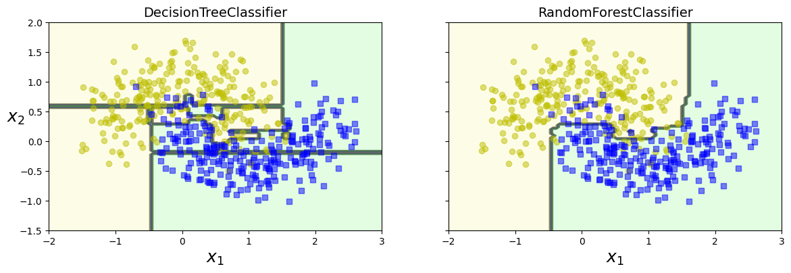
2.2 Boosting
Hands-On Machine Learning, p. 257 ff.
Boosting is an ensemble technique that connects several weak models in series to build a strong model.
Each model is trained to compensate for the weaknesses of its predecessor.
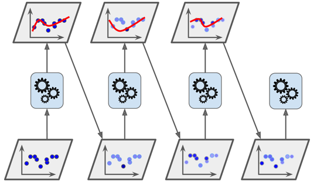
- Two boosting methods are covered:
- AdaBoost (Adaptive Boosting)
- Gradient Boosting
2.3 AdaBoost
Hands-On Machine Learning, p. 258 ff.
AdaBoost trains as follows:
increase the weights of the samples the previous model misclassified,
train the next model with emphasis on those re-weighted samples.
from sklearn.ensemble import AdaBoostClassifier
ada_clf = AdaBoostClassifier(
DecisionTreeClassifier(max_depth=1), n_estimators=200,
algorithm="SAMME.R", learning_rate=0.5, random_state=42)
ada_clf.fit(X_train, y_train)AdaBoostClassifier(estimator=DecisionTreeClassifier(max_depth=1),
learning_rate=0.5, n_estimators=200, random_state=42)tree_clf = DecisionTreeClassifier(random_state=42)
tree_clf.fit(X_train, y_train)
y_pred_tree = tree_clf.predict(X_test)# Decision Tree
y_pred_tree = tree_clf.predict(X_test)
print(accuracy_score(y_test, y_pred_tree))
# Boosting
y_pred_tree = ada_clf.predict(X_test)
print(accuracy_score(y_test, y_pred_tree))0.832
0.856plot_decision_boundary(ada_clf, X, y)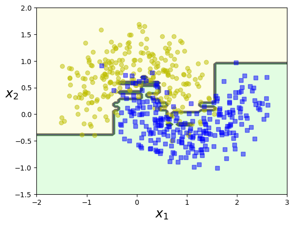
2.4 Gradient Boosting
Hands-On Machine Learning, p. 262 ff.
In gradient boosting, each new predictor is fit to the residual errors of the previous predictor.
np.random.seed(42)
X = np.random.rand(100, 1) - 0.5
y = 3*X[:, 0]**2 + 0.05 * np.random.randn(100)plt.plot(X, y, "bo")
plt.grid(True, which='both')
plt.xlabel(r"$x_1$", fontsize=20)
plt.ylabel(r"$y$", fontsize=20, rotation=0)
plt.show()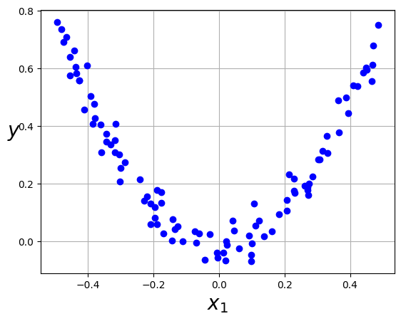
- The example below shows how the data above are learned step by step.
- Fit the first
DecisionTreeRegressorto the data
from sklearn.tree import DecisionTreeRegressor
tree_reg1 = DecisionTreeRegressor(max_depth=2, random_state=2023)
tree_reg1.fit(X, y)DecisionTreeRegressor(max_depth=2, random_state=2023)- Fit a second
DecisionTreeRegressorto the residuals of the first predictor
################## Fill Your Code! ##################
y2 = y - tree_reg1.predict(X)
#####################################################
tree_reg2 = DecisionTreeRegressor(max_depth=2, random_state=2023)
tree_reg2.fit(X, y2)DecisionTreeRegressor(max_depth=2, random_state=2023)- Fit a third
DecisionTreeRegressorto the residuals of the second predictor
################## Fill Your Code! ##################
y3 = y2 - tree_reg2.predict(X)
#####################################################
tree_reg3 = DecisionTreeRegressor(max_depth=2, random_state=2023)
tree_reg3.fit(X, y3)DecisionTreeRegressor(max_depth=2, random_state=2023)- Evaluate the three trained regressors together on test data.
X_test = np.random.rand(50, 1) - 0.5
y_test = 3*X_test[:, 0]**2 + 0.05 * np.random.randn(50)# The ensemble prediction is the sum of the predictions of all trees.
################## Fill Your Code! ##################
y_pred = sum(tree.predict(X_test) for tree in (tree_reg1, tree_reg2, tree_reg3))
#####################################################from sklearn.metrics import mean_squared_error
MSE = mean_squared_error(y_test, y_pred)
print(MSE)0.007798169544715141- Visualize the regression result.
def plot_predictions(regressors, X, y, axes, label=None, style="r-", data_style="b.", data_label=None):
x1 = np.linspace(axes[0], axes[1], 500)
y_pred = sum(regressor.predict(x1.reshape(-1, 1)) for regressor in regressors)
plt.plot(X[:, 0], y, data_style, label=data_label)
plt.plot(x1, y_pred, style, linewidth=2, label=label)
if label or data_label:
plt.legend(loc="upper center", fontsize=16)
plt.axis(axes)plt.figure(figsize=(11,11))
plt.subplot(321)
plot_predictions([tree_reg1], X, y, axes=[-0.5, 0.5, -0.1, 0.8], label="$h_1(x_1)$", style="g-", data_label="Training set")
plt.ylabel("$y$", fontsize=16, rotation=0)
plt.title("Residuals and tree predictions", fontsize=16)
plt.subplot(322)
plot_predictions([tree_reg1], X, y, axes=[-0.5, 0.5, -0.1, 0.8], label="$h(x_1) = h_1(x_1)$", data_label="Training set")
plt.ylabel("$y$", fontsize=16, rotation=0)
plt.title("Ensemble predictions", fontsize=16)
plt.subplot(323)
plot_predictions([tree_reg2], X, y2, axes=[-0.5, 0.5, -0.5, 0.5], label="$h_2(x_1)$", style="g-", data_style="k+", data_label="Residuals")
plt.ylabel("$y - h_1(x_1)$", fontsize=16)
plt.subplot(324)
plot_predictions([tree_reg1, tree_reg2], X, y, axes=[-0.5, 0.5, -0.1, 0.8], label="$h(x_1) = h_1(x_1) + h_2(x_1)$")
plt.ylabel("$y$", fontsize=16, rotation=0)
plt.subplot(325)
plot_predictions([tree_reg3], X, y3, axes=[-0.5, 0.5, -0.5, 0.5], label="$h_3(x_1)$", style="g-", data_style="k+")
plt.ylabel("$y - h_1(x_1) - h_2(x_1)$", fontsize=16)
plt.xlabel("$x_1$", fontsize=16)
plt.subplot(326)
plot_predictions([tree_reg1, tree_reg2, tree_reg3], X, y, axes=[-0.5, 0.5, -0.1, 0.8], label="$h(x_1) = h_1(x_1) + h_2(x_1) + h_3(x_1)$")
plt.xlabel("$x_1$", fontsize=16)
plt.ylabel("$y$", fontsize=16, rotation=0)
#save_fig("gradient_boosting_plot")
plt.show()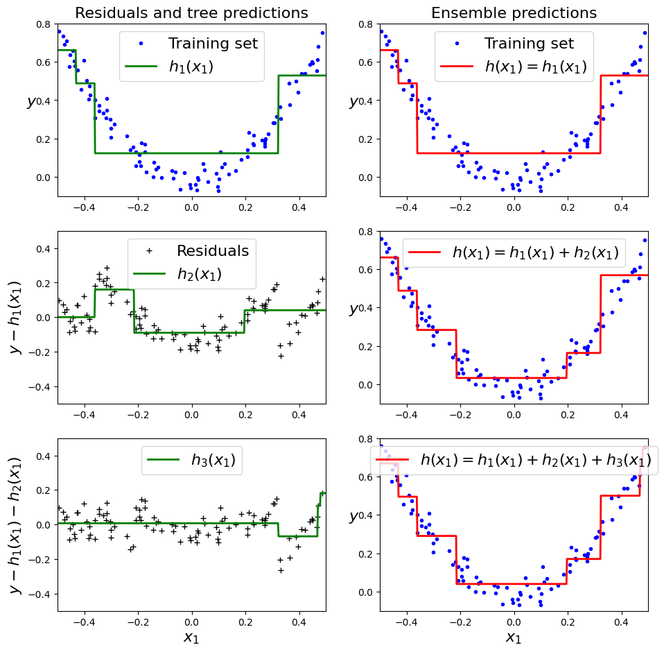
- scikit-learn’s
GradientBoostingRegressordoes the same thing:
from sklearn.ensemble import GradientBoostingRegressor
gbrt = GradientBoostingRegressor(max_depth=2, n_estimators=3, learning_rate=1.0, random_state=2023)
gbrt.fit(X, y)GradientBoostingRegressor(learning_rate=1.0, max_depth=2, n_estimators=3,
random_state=2023)X_test = np.random.rand(50, 1) - 0.5
y_test = 3*X_test[:, 0]**2 + 0.05 * np.random.randn(50)
y_pred = gbrt.predict(X_test)
MSE = mean_squared_error(y_test, y_pred)
print(MSE)0.006130199395381255XGBoost (eXtreme Gradient Boosting)
Hands-On Machine Learning, p. 267 ff.
- The last boosting method is XGBoost.
- Here each tree is trained not on the whole dataset but on a given fraction of the data (
subsample).
import numpy as np
from sklearn.model_selection import train_test_split
from sklearn.metrics import mean_squared_errorimport xgboost
# https://stackoverflow.com/questions/58318685/how-to-hide-warnings-from-xgboost-library-in-jupyter
# subsample sets the fraction of the data used to grow each tree.
xgb_reg = xgboost.XGBRegressor(random_state=2023, subsample = 0.7, silent=True)
xgb_reg.fit(X, y)
y_pred = xgb_reg.predict(X_test)
test_error = mean_squared_error(y_test, y_pred)
print("Validation MSE:", test_error)Validation MSE: 0.00541015148036977/usr/local/lib/python3.10/dist-packages/xgboost/core.py:160: UserWarning: [07:11:46] WARNING: /workspace/src/learner.cc:742:
Parameters: { "silent" } are not used.
warnings.warn(smsg, UserWarning)3. Support Vector Machines
Hands-On Machine Learning, p. 205 ff.
3.0 Support Vector Machine (SVM)
- The support vector machine (SVM) can be seen as an extension of the linear / logistic classifiers studied earlier.
- The difference is that an SVM has a margin region on both sides of the decision boundary.
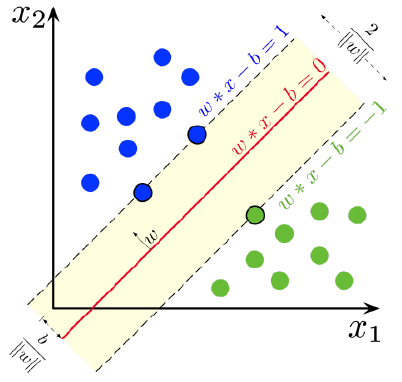
- The SVM is an optimization problem that maximizes the width of the margin.
# support vectors: the circled samples lying on the margin3.1 Linear SVM Classification
Below is the most basic objective function of a linear SVM.

from sklearn import datasets
iris = datasets.load_iris()
X = iris["data"][:, (2, 3)] # petal length, petal width
y = iris["target"]
setosa_or_versicolor = (y == 0) | (y == 1)
X = X[setosa_or_versicolor]
y = y[setosa_or_versicolor]iris.feature_names[2:4]['petal length (cm)', 'petal width (cm)']iris.target_namesarray(['setosa', 'versicolor', 'virginica'], dtype='<U10')from sklearn.svm import SVC
################## Fill Your Code! ##################
# SVM classifier
svm_clf = SVC(kernel="linear", C=1e10)
#####################################################
svm_clf.fit(X, y)SVC(C=10000000000.0, kernel='linear')import numpy as np
import matplotlib.pyplot as plt
def plot_svc_decision_boundary(svm_clf, xmin, xmax):
w = svm_clf.coef_[0]
b = svm_clf.intercept_[0]
# On the decision boundary w0*x0 + w1*x1 + b = 0,
# => x1 = -w0/w1 * x0 - b/w1
x0 = np.linspace(xmin, xmax, 200)
decision_boundary = -w[0]/w[1] * x0 - b/w[1]
margin = 1/w[1]
gutter_up = decision_boundary + margin
gutter_down = decision_boundary - margin
svs = svm_clf.support_vectors_
plt.scatter(svs[:, 0], svs[:, 1], s=250, facecolors='#FFAAAA')
plt.plot(x0, decision_boundary, "k-", linewidth=2)
plt.plot(x0, gutter_up, "k--", linewidth=2)
plt.plot(x0, gutter_down, "k--", linewidth=2)
plot_svc_decision_boundary(svm_clf, 0, 5.5)
plt.plot(X[:, 0][y==1], X[:, 1][y==1], "bs", label="Iris versicolor")
plt.plot(X[:, 0][y==0], X[:, 1][y==0], "yo", label="Iris setosa")
plt.xlabel("Length", fontsize=14)
plt.ylabel("Width", fontsize=14)
plt.legend(loc="lower right", fontsize=14)
plt.axis([0, 5.5, 0, 2])
plt.show()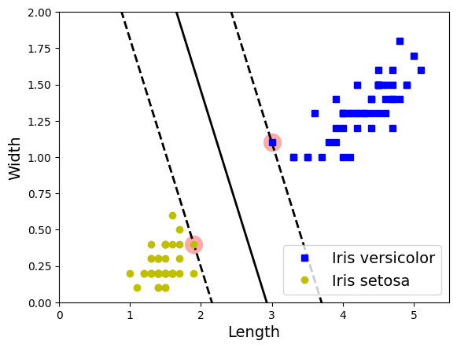
- Support vectors: the samples lying on the margin of the decision boundary
- Samples outside the margin do not affect the decision boundary.
- In other words, the decision boundary is determined only by the support vectors.
3.1.1 Hard Margin Classification
Every sample must lie outside the margin.
Problems
only works if the data are linearly separable
very sensitive to outliers
The objective function below is still used.
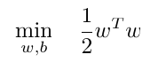
X_outliers = np.array([[3.4, 1.3], [3.2, 0.8]])
y_outliers = np.array([0, 0])
Xo1 = np.concatenate([X, X_outliers[:1]], axis=0)
yo1 = np.concatenate([y, y_outliers[:1]], axis=0)
Xo2 = np.concatenate([X, X_outliers[1:]], axis=0)
yo2 = np.concatenate([y, y_outliers[1:]], axis=0)
################## Fill Your Code! ##################
svm_clf2 = SVC(kernel="linear", C=1e10)
#####################################################
svm_clf2.fit(Xo2, yo2)
fig, axes = plt.subplots(ncols=2, figsize=(10,2.7), sharey=True)
plt.sca(axes[0])
plt.plot(Xo1[:, 0][yo1==1], Xo1[:, 1][yo1==1], "bs")
plt.plot(Xo1[:, 0][yo1==0], Xo1[:, 1][yo1==0], "yo")
plt.text(0.3, 1.0, "Impossible!", fontsize=24, color="red")
plt.xlabel("Length", fontsize=14)
plt.ylabel("Width", fontsize=14)
plt.annotate("Outlier",
xy=(X_outliers[0][0], X_outliers[0][1]),
xytext=(2.5, 1.7),
ha="center",
arrowprops=dict(facecolor='black', shrink=0.1),
fontsize=16,
)
plt.axis([0, 5.5, 0, 2])
plt.sca(axes[1])
plt.plot(Xo2[:, 0][yo2==1], Xo2[:, 1][yo2==1], "bs")
plt.plot(Xo2[:, 0][yo2==0], Xo2[:, 1][yo2==0], "yo")
plot_svc_decision_boundary(svm_clf2, 0, 5.5)
plt.xlabel("Length", fontsize=14)
plt.annotate("Outlier",
xy=(X_outliers[1][0], X_outliers[1][1]),
xytext=(3.2, 0.08),
ha="center",
arrowprops=dict(facecolor='black', shrink=0.1),
fontsize=16,
)
plt.axis([0, 5.5, 0, 2])
#save_fig("sensitivity_to_outliers_plot")
plt.show()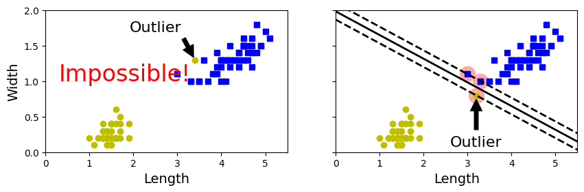
3.1.2 Soft Margin Classification
A more flexible model is needed to handle the problems above:
keep the margin as wide as possible,
while balancing against margin violations (samples inside the margin or on the wrong side).
Soft margin classification optimizes the modified objective below.
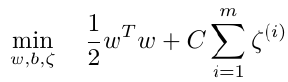
Constrained optimization
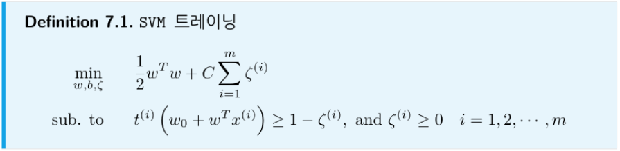
\(\zeta^{(i)}\) is a slack variable that allows the \(i\)-th sample to violate the margin.
\(C\) trades off the margin width against the slack variables.
\(t^{(i)}=y^{(i)}\) is the label of the \(i\)-th sample; in the SVM formulation it is \(+1\) or \(-1\).
\(t^{(i)}(w_0 + w^T x^{(i)}) = t^{(i)} \hat{t}^{(i)} = y^{(i)} \hat{y}^{(i)}\).
# zeta(i) >= 1 - t(i) * t_hat(i)Augmented objective function
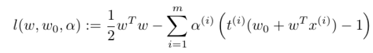
Stationary point conditions
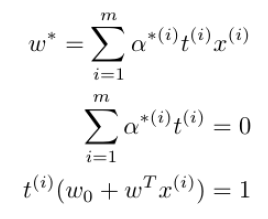
Final form
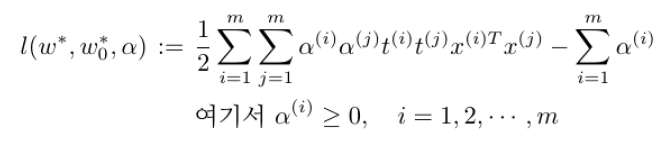
import numpy as np
from sklearn import datasets
from sklearn.pipeline import Pipeline
from sklearn.preprocessing import StandardScaler
from sklearn.svm import LinearSVC
iris = datasets.load_iris()
X = iris["data"][:, (2, 3)] # petal length, petal width
y = (iris["target"] == 2).astype(np.float64) # Iris virginicascaler = StandardScaler()
################## Fill Your Code! ##################
svm_clf1 = LinearSVC(C=1, random_state=2023)
svm_clf2 = LinearSVC(C=100, random_state=2023)
#####################################################
scaled_svm_clf1 = Pipeline([
("scaler", scaler),
("linear_svc", svm_clf1),
])
scaled_svm_clf2 = Pipeline([
("scaler", scaler),
("linear_svc", svm_clf2),
])
scaled_svm_clf1.fit(X, y)
scaled_svm_clf2.fit(X, y)/usr/local/lib/python3.10/dist-packages/sklearn/svm/_base.py:1244: ConvergenceWarning: Liblinear failed to converge, increase the number of iterations.
warnings.warn(Pipeline(steps=[('scaler', StandardScaler()),
('linear_svc', LinearSVC(C=100, random_state=2023))])# Convert to unscaled parameters
b1 = svm_clf1.decision_function([-scaler.mean_ / scaler.scale_])
b2 = svm_clf2.decision_function([-scaler.mean_ / scaler.scale_])
w1 = svm_clf1.coef_[0] / scaler.scale_
w2 = svm_clf2.coef_[0] / scaler.scale_
svm_clf1.intercept_ = np.array([b1])
svm_clf2.intercept_ = np.array([b2])
svm_clf1.coef_ = np.array([w1])
svm_clf2.coef_ = np.array([w2])
# Find the support vectors (unlike libsvm, liblinear does not expose them,
# so LinearSVC does not store support_vectors_)
t = y * 2 - 1
support_vectors_idx1 = (t * (X.dot(w1) + b1) < 1).ravel()
support_vectors_idx2 = (t * (X.dot(w2) + b2) < 1).ravel()
svm_clf1.support_vectors_ = X[support_vectors_idx1]
svm_clf2.support_vectors_ = X[support_vectors_idx2]fig, axes = plt.subplots(ncols=2, figsize=(10,2.7), sharey=True)
plt.sca(axes[0])
plt.plot(X[:, 0][y==1], X[:, 1][y==1], "g^", label="Iris virginica")
plt.plot(X[:, 0][y==0], X[:, 1][y==0], "bs", label="Iris versicolor")
plot_svc_decision_boundary(svm_clf1, 4, 5.9)
plt.xlabel("Length", fontsize=14)
plt.ylabel("Width", fontsize=14)
plt.legend(loc="upper left", fontsize=14)
plt.title("$C = {}$".format(svm_clf1.C), fontsize=16)
plt.axis([4, 5.9, 0.8, 2.8])
plt.sca(axes[1])
plt.plot(X[:, 0][y==1], X[:, 1][y==1], "g^")
plt.plot(X[:, 0][y==0], X[:, 1][y==0], "bs")
plot_svc_decision_boundary(svm_clf2, 4, 5.99)
plt.xlabel("Length", fontsize=14)
plt.title("$C = {}$".format(svm_clf2.C), fontsize=16)
plt.axis([4, 5.9, 0.8, 2.8])
#save_fig("regularization_plot")(4.0, 5.9, 0.8, 2.8)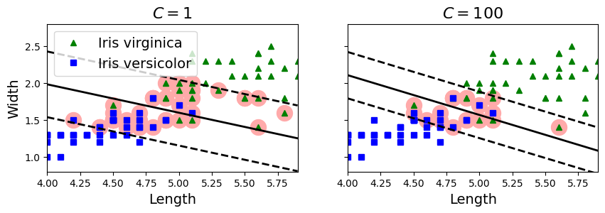
The width of the margin changes with \(C\).
A small \(C\) penalizes margin violations lightly, so the margin becomes wider.
A large \(C\) penalizes margin violations heavily, so the margin becomes narrower.
3.2 Nonlinear SVM Classification
Hands-On Machine Learning, p. 209 ff.
- SVMs perform very well on linearly separable data.
- Nonlinear data, however, cannot be handled by a plain SVM.
- The solution is to create additional features from the data and use them for classification.
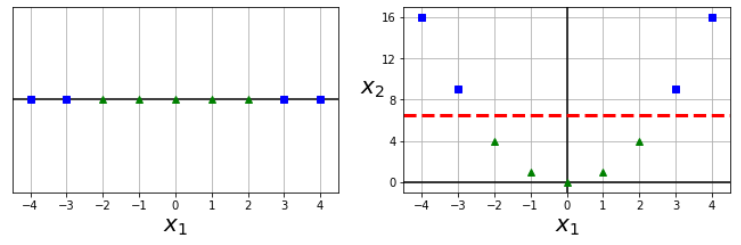
The left plot shows a dataset with a single feature \(x_1\).
It cannot be classified with a single line.
The right plot adds a second feature \(x_2 = x_1^2\).
Now the data can be separated with a single line.
In other words, nonlinear SVMs can be handled in the same way as polynomial regression.
from sklearn.datasets import make_moons
X, y = make_moons(n_samples=100, noise=0.15, random_state=2023)
def plot_dataset(X, y, axes):
plt.plot(X[:, 0][y==0], X[:, 1][y==0], "bs")
plt.plot(X[:, 0][y==1], X[:, 1][y==1], "g^")
plt.axis(axes)
plt.grid(True, which='both')
plt.xlabel(r"$x_1$", fontsize=20)
plt.ylabel(r"$x_2$", fontsize=20, rotation=0)
plot_dataset(X, y, [-1.5, 2.5, -1, 1.5])
plt.show()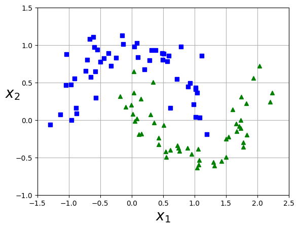
from sklearn.datasets import make_moons
from sklearn.pipeline import Pipeline
from sklearn.preprocessing import PolynomialFeatures
polynomial_svm_clf = Pipeline([
("poly_features", PolynomialFeatures(degree=3)),
("scaler", StandardScaler()),
################## Fill Your Code! ##################
("svm_clf", LinearSVC(C=10, random_state=2023))
#####################################################
])
polynomial_svm_clf.fit(X, y)Pipeline(steps=[('poly_features', PolynomialFeatures(degree=3)),
('scaler', StandardScaler()),
('svm_clf', LinearSVC(C=10, random_state=2023))])def plot_predictions(clf, axes):
x0s = np.linspace(axes[0], axes[1], 100)
x1s = np.linspace(axes[2], axes[3], 100)
x0, x1 = np.meshgrid(x0s, x1s)
X = np.c_[x0.ravel(), x1.ravel()]
y_pred = clf.predict(X).reshape(x0.shape)
y_decision = clf.decision_function(X).reshape(x0.shape)
plt.contourf(x0, x1, y_pred, cmap=plt.cm.brg, alpha=0.2)
plt.contourf(x0, x1, y_decision, cmap=plt.cm.brg, alpha=0.1)
plot_predictions(polynomial_svm_clf, [-1.5, 2.5, -1, 1.5])
plot_dataset(X, y, [-1.5, 2.5, -1, 1.5])
#save_fig("moons_polynomial_svc_plot")
plt.show()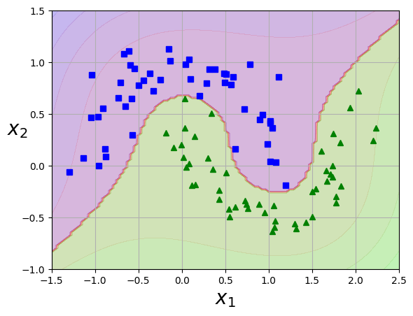
3.2.1 The Kernel Trick
Hands-On Machine Learning, p. 211 ff.
- Adding polynomial features works well on nonlinear datasets, as shown above.
- But a low-degree polynomial does not work well on very complex datasets,
- and a very high-degree polynomial adds a huge number of features, making the model slow.
The solution is the kernel trick. - It behaves as if many polynomial features had been added, without actually adding them.
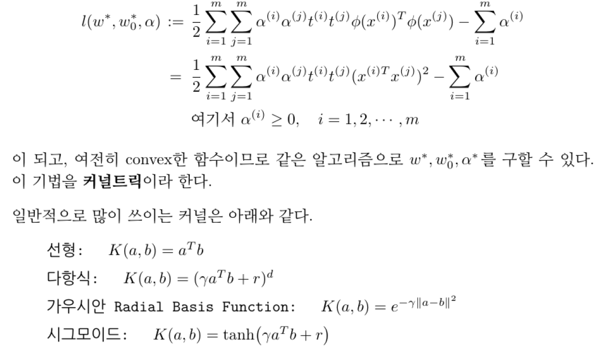
from sklearn.svm import SVC
poly_kernel_svm_clf = Pipeline([
("scaler", StandardScaler()),
################## Fill Your Code! ##################
("svm_clf", SVC(kernel="poly", degree=3, coef0=1, C=5))
#####################################################
])
poly_kernel_svm_clf.fit(X, y)poly100_kernel_svm_clf = Pipeline([
("scaler", StandardScaler()),
################## Fill Your Code! ##################
("svm_clf", SVC(kernel="poly", degree=10, coef0=100, C=5))
#####################################################
])
poly100_kernel_svm_clf.fit(X, y)Pipeline(steps=[('scaler', StandardScaler()),
('svm_clf', SVC(C=5, coef0=100, degree=10, kernel='poly'))])fig, axes = plt.subplots(ncols=2, figsize=(10.5, 4), sharey=True)
plt.sca(axes[0])
plot_predictions(poly_kernel_svm_clf, [-1.5, 2.45, -1, 1.5])
plot_dataset(X, y, [-1.5, 2.4, -1, 1.5])
plt.title(r"$d=3, r=1, C=5$", fontsize=18)
plt.sca(axes[1])
plot_predictions(poly100_kernel_svm_clf, [-1.5, 2.45, -1, 1.5])
plot_dataset(X, y, [-1.5, 2.4, -1, 1.5])
plt.title(r"$d=10, r=100, C=5$", fontsize=18)
plt.ylabel("")
#save_fig("moons_kernelized_polynomial_svc_plot")
plt.show()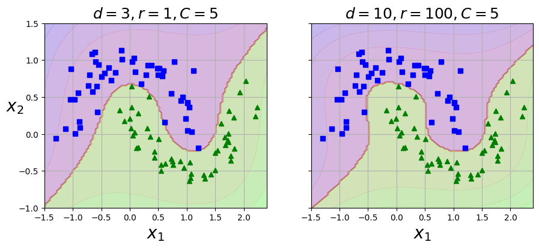
3.2.2 Online SVM
Hands-On Machine Learning, p. 226 ff.
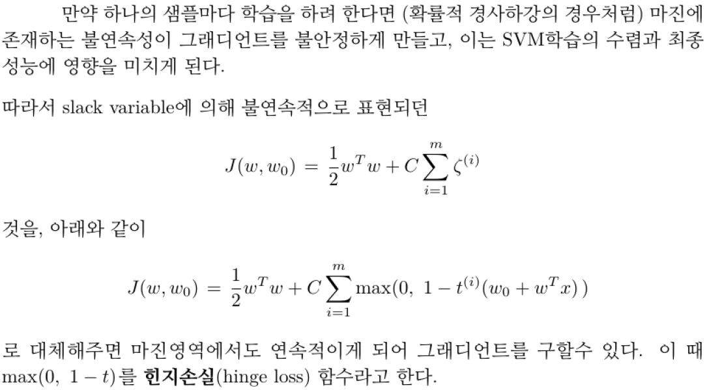
A minimal linear SVM classifier trained with gradient descent on the hinge-loss objective, compared with scikit-learn’s SVC:
class Linear_SVM_Classifier():
def __init__(self, C=1):
self.theta1n = None
self.theta0 = None
self.losses = []
self.C = C
self.intercept_ = None
self.coef_ = None
self.support_vectors_ = None
def fit(self, x, y, epochs=10000, eta=0.001):
self.theta1n = np.ones((x.shape[1], 1)) # (x.shape[1], 1)
self.theta0 = 0
m = len(x)
t = y * 2 - 1 # t = -1 if y == 0, t = +1 if y == 1
x_t = x * t # element-wise
for _ in range(epochs):
support_vectors_idx = (x_t.dot(self.theta1n) + t * self.theta0 < 1).ravel()
x_t_sv = x_t[support_vectors_idx]
t_sv = t[support_vectors_idx]
# loss
loss = 1/2 * np.sum(self.theta1n * self.theta1n) + self.C * (np.sum(1 - x_t_sv.dot(self.theta1n)) - self.theta0 * np.sum(t_sv))
self.losses.append(loss)
# gradients
theta1n_grad = self.theta1n - self.C * np.sum(x_t_sv, axis=0).reshape(-1, 1)
theta0_grad = -C * np.sum(t_sv)
# update
self.theta1n -= eta * theta1n_grad
self.theta0 -= eta * theta0_grad
self.intercept_ = np.array([self.theta0])
self.coef_ = np.array([self.theta1n])
support_vectors_idx = (x_t.dot(self.theta1n) + t * self.theta0 < 1).ravel()
self.support_vectors_ = x[support_vectors_idx]
def decision_function(self, x):
return x.dot(self.coef_[0]) + self.intercept_[0]
def predict(self, x):
return (self.decision_function(x) >= 0).astype(np.float64)# Training set
X = iris["data"][:, (2, 3)] # petal length, petal width
y = (iris["target"] == 2).astype(np.float64).reshape(-1, 1) # Iris virginicaC = 2
epochs = 30000
linear_svm_clf = Linear_SVM_Classifier(C=C)
linear_svm_clf.fit(X, y, epochs=epochs, eta=0.001)
print(linear_svm_clf.intercept_, linear_svm_clf.coef_)
yr = y.ravel()
fig, axes = plt.subplots(ncols=2, figsize=(11, 3.2), sharey=True)
plt.sca(axes[0])
plt.plot(X[:, 0][yr==1], X[:, 1][yr==1], "g^", label="Iris virginica")
plt.plot(X[:, 0][yr==0], X[:, 1][yr==0], "bs", label="Not Iris virginica")
plot_svc_decision_boundary(linear_svm_clf, 4, 6)
plt.xlabel("Length", fontsize=14)
plt.ylabel("Width", fontsize=14)
plt.title("Our Linear_SVM_Classifier", fontsize=14)
plt.axis([4, 6, 0.8, 2.8])
plt.legend(loc="upper left")
svm_clf2 = SVC(kernel="linear", C=C)
svm_clf2.fit(X, y.ravel())
print(svm_clf2.intercept_, svm_clf2.coef_)
plt.sca(axes[1])
plt.plot(X[:, 0][yr==1], X[:, 1][yr==1], "g^")
plt.plot(X[:, 0][yr==0], X[:, 1][yr==0], "bs")
plot_svc_decision_boundary(svm_clf2, 4, 6)
plt.xlabel("Length", fontsize=14)
plt.title("SVC", fontsize=14)
plt.axis([4, 6, 0.8, 2.8]);[-15.298] [[[2.22013333]
[2.71619822]]]
[-15.51721253] [[2.27128546 2.71287145]]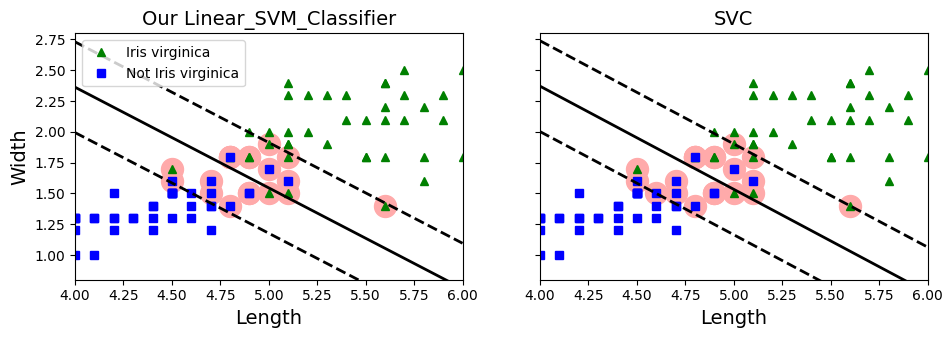
plt.figure(figsize=(20, 10))
plt.plot(range(epochs), linear_svm_clf.losses)
plt.axis([0, epochs, 0, 100])(0.0, 30000.0, 0.0, 100.0)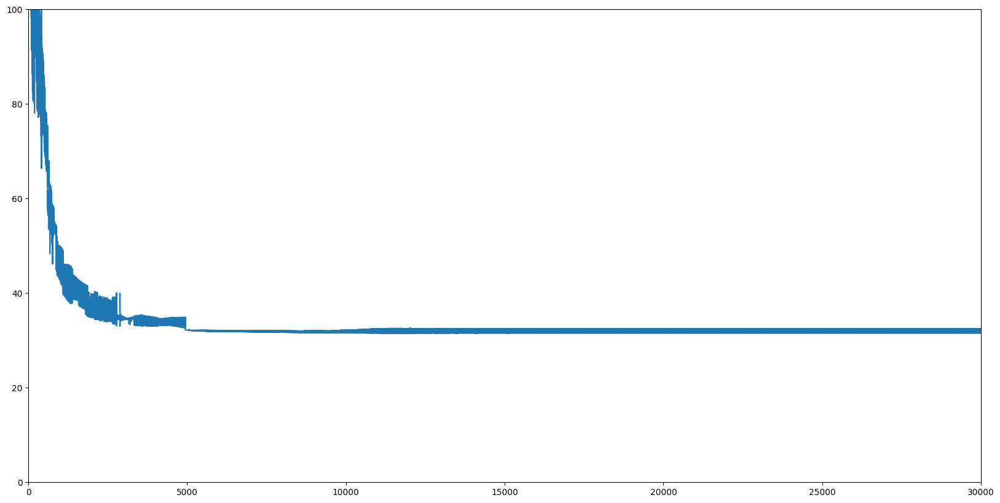